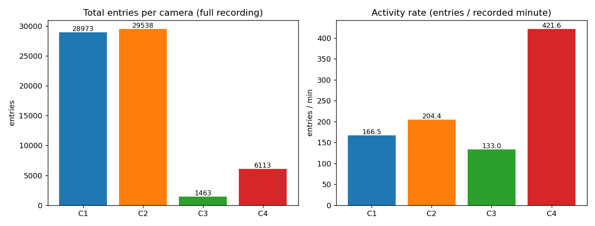
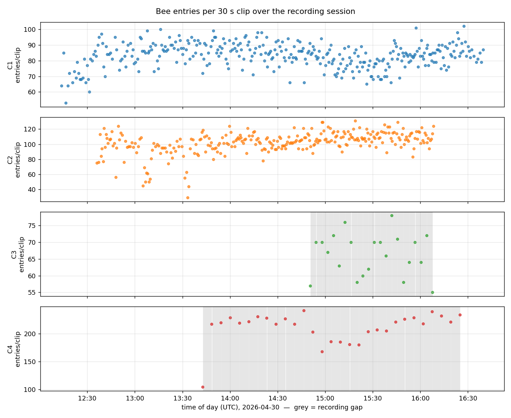
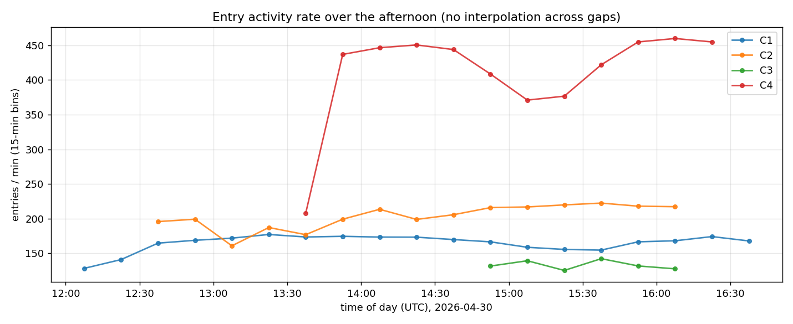

Full-dataset bee-entry report (auto-generated)
Generated by scripts/aggregate_dataset.py on 2026-06-21 11:49 UTC. Method: shipped absorption
counter (YOLO-FT transfer detector → entry-zone terminations), applied to every video.
Geometry transfers because the cameras are static (Phase 3). Counting reproduces the
committed result on the original GT clip (C1_IMAG0016 → 53; manual GT 51) — see
dataset_plan.md G4. GT is an approximate ballpark, so counts are robust estimates,
not exact truth.
66087 total bee entries across 688 counted clips (0 clips failed → excluded, counted as null not 0).
Per-camera summary
Cross-camera traffic is compared by entries / recorded minute (activity rate), not raw totals: these are motion-triggered cameras, so total entries scale with how long each recorded (C1/C2 hours, C3/C4 minutes), while the rate reflects actual traffic.
| Cam | clips | counted | total entries | recorded | entries/rec-min | mean/clip | peak clip (UTC) |
|---|---|---|---|---|---|---|---|
| C1 | 348 | 348 | 28973 | 174 min | 166.51 | 83.3 | 102 @ 16:27:23 (C1_IMAG1348) |
| C2 | 289 | 289 | 29538 | 144 min | 204.42 | 102.2 | 131 @ 15:19:01 (C2_IMAG0916) |
| C3 | 22 | 22 | 1463 | 11 min | 133.0 | 66.5 | 78 @ 15:41:56 (C3_IMAG0030) |
| C4 | 29 | 29 | 6113 | 14 min | 421.59 | 210.8 | 242 @ 14:46:25 (C4_IMAG0024) |
Figures



Reading the numbers
- Totals are recording-time-dominated. C1 and C2 triggered near-continuously for hours; C3 and C4 are motion-triggered and recorded only minutes, so their totals are small even where per-clip traffic is high. Use the activity rate to compare cameras.
- Activity rate (entries/recorded-min) is the fair cross-camera measure of how busy each entrance was while it was being filmed.
- Gaps are real. The per-clip timeline shades non-recording periods; rates are never interpolated across them (a gap means unknown, not zero traffic).
Validation — are the counts trustworthy?
Counts use the camera-geometry-corrected configs (2026-06-21 review — see
camera_geometry.md); excluded clips (install / stray / out-of-position
/ fall, per configs/valid_windows.yaml) are dropped. The manual-GT clips, windowed to their
labelled frame, land in the count band against the human GT:
| Cam | GT clip | windowed | manual GT | ratio | band | geometry |
|---|---|---|---|---|---|---|
| C1 | C1_IMAG0016 | 52 | 51 | 1.02 | ±10% | unchanged |
| C3 | C3_IMAG0006 | 49 | 48 | 1.02 | ±10% | unchanged |
| C4 | C4_IMAG004 | 38 | 42 | 0.9 | ±10% | re-drawn |
C1 and C3 keep their original geometry and reproduce the committed scoreboard; C4's re-drawn geometry re-validates against its manual GT. C2 has no windowed-GT check post-fix — its only labelled clip (IMAG0016) sits in the dropped segment A (before the 12:36 camera jump), so C2's re-drawn crop+zone were validated visually on representative clips, not against the GT clip. C2's headline therefore carries more uncertainty than C1/C3/C4 (flagged below).
Judge spot-check (detection signal). scripts/judge_spotcheck.py had Opus count
bees on the detector's own entrance crop vs the detector box count (median judge/detector: C1 0.26, C2 0.28, C3 0.67, C4 0.92).
The detector finds many more raw boxes than Opus on C1/C2 — expected: the FT detector
over-fires low-confidence duplicate boxes at conf 0.1 (decisions.md) and Opus is a known
undercounter on these scenes (it returned C1=0 in the original report). So raw detector
density is not a clean per-frame census, and entries cannot be read off it — which is
exactly why the counter counts gated chain-terminations in the zone with de-dup, not raw
detections. The count's validity therefore rests on the GT-clip reproduction above, not on
raw detection density. See judge_spotcheck.md.
Camera stability (corrected 2026-06-21). A manual quality-gate review found the cameras are
NOT static across the session. Fixes applied (full write-up: camera_geometry.md):
C2's camera jumped ~157px at 12:36 and fell to the sky at the end → crop+zone re-drawn, valid window
IMAG0056–1208; C4's crop+zone re-drawn; C1/C3 unchanged. Install/removal/stray/out-of-position clips
are excluded via configs/valid_windows.yaml. So these counts supersede the original full-dataset run.
Caveats. Counts are robust ballpark estimates, not exact truth (manual GT is itself approximate). C2 carries the most uncertainty post-fix: its only GT clip is in the dropped segment, so its re-drawn geometry is visually (not GT-) validated, and grass progressively occludes its entrance. C4 is the densest/grassiest (recall ~0.88) with only 29 clips. C3 also has few clips (23). C1 has hundreds of clips, unchanged geometry, and is the most stable aggregate.
Exports
data/dataset_entries.csv/.json— per-clip entries + absolute times + rate.data/entries_by_bin.csv— entries per 15-min bin per camera (recorded-time-weighted).data/timeline.json— full per-clip timeline + gaps.